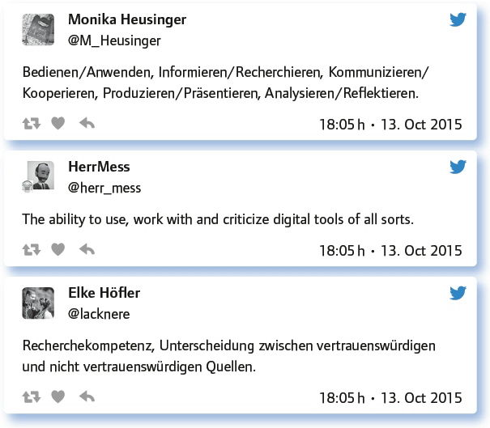
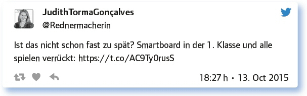

von Alicia Bankhofer
Es ist irgendwie passend, dass beim 100. #EDchatDE das Thema „Digitale Kompetenzen“ im Fokus war. 2016 prägten technologische Neuerungen unsere Wissens- und Informationsgesellschaft weiter. Für die Institution Schule sind die gesellschaftlichen Entwicklungen eine ernstzunehmende Herausforderung, für die es kein leichtes Rezept gibt. Wie kann Schule den Bildungsauftrag in diesem Bereich nachkommen? Wie und wann sollen digitale Kompetenzen vermittelt werden?
Bei der Diskussion ging es zunächst um die inhaltliche Frage. – Worüber reden wir, wenn wir über digitale Kompetenzen sprechen?
Digitale Kompetenzen? Was gehört denn alles dazu?

Die Teilgeber beschäftigten sich nun mit dem erweiterten inhaltlichen Spektrum: Wie sieht das Fehlen von digitalen Kompetenzen aus? Wie sehen manche „Sünden“ aus?
Inkompetenz im Digitalen? Wo zeigt sich die? (Gerne mit Links)
Unreflektiertes Posten in sozialen Medien.
Unsere 16-jährigen Mitarbeiter: E-Mails … ach ja. Vor drei Wochen das letzte Mal abgerufen. Schickt sie mir bitte via WhatsApp.
Inkompetent ist: Digitale Bildung in der Schule ausschließlich mit Rechercheaufträgen im Internet gleichzusetzen.
Digital illiteracy: Handyverbote, weil man sich von ihnen selbst überfordert sieht.
Urheberrechtsmissbrauch durch Unwissenheit.
Wenn digitale Medien wie analoge verwendet werden (z. B. Whiteboard als Tafelersatz).
Natürlich muss geklärt werden, wer für digitale Bildung zuständig ist. Inwiefern brauchen das die „digital natives“ überhaupt?
Wer ist für das Erlernen bzw. die Vermittlung digitaler Kompetenzen zuständig? Warum?
Jede/r Einzelne selbst.
Die Eltern! Es muss klare Regeln und Begleitung geben – dafür müssen Eltern aber auch neugierig, offen und lernbereit sein.
Teaching digital literacy is one of the important tasks schools have. It’s comparable to teaching handwriting.
Das Bildungsministerium, das Digitalkunde endlich verbindlich auf den Schulplan schreiben sollte.
Schule und Eltern gemeinsam. Meine Erfahrung: Manche Eltern geben die Hardware und erwarten den Rest dann von der Schule.
Teachers and schools can only assist as most of digital usage is (still!) done outside the classroom.
Nun wurden die Teilgeber herausgefordert, einen Plan für die digitale Bildung zu erstellen. Geht das denn so leicht? Konzepte existieren bereits, vereinzelt …
Bastelt ein Curriculum für die Vermittlung von digitalen Kompetenzen, das mindestens die Klassen 5 bis 10 umfasst. Was soll wann erreicht werden?
Beispiele finden sich im Medienpass NRW: https://t.co/HfwACwYzUf und Medien- komP@ss RLP: http://t.co/MMy8GQkd2E
Ich denke, dass der https://t.co/HfwACwYzUf da ein guter Ansatzpunkt ist. Kompetenzen 5–6: https://t.co/BO0LgJvWFD, Kompetenzrahmen 7–9/10: https://t.co/BO0LgJvWFD
Praktische Beispiele finden sich auch im Medienkompass Mecklenburg-Vorpommern: http://t.co/JRVl83ZTJS
Der Medienpass NRW integriert digitale Kompetenzen in alle Fächer – teilweise auch ohne digitale Medien, da z. B. Quellenbewertung allgemein gültig.
Am besten integriert man sinnvoll viele digitale Medien in viele Fächer, dann steigt die digitale Kompetenz ohne Extra-Lehrplan.
Antworte auf 3 Tweets unterschiedlicher Teilgeberinnen a) zustimmend, b) kritisch, c) provozierend!

Nun diskutierten die Teilgeber die Rolle der Eltern bei der Vermittlung von digitalen Kompetenzen. Hier wurde betont, dass es sehr wichtig ist, dass die Eltern sich entweder alleine oder gemeinsam mit den Kindern fortbilden.
Erziehungsberatung: Wie können Eltern digitale Kompetenzen fördern? Was sollen sie tun? Was sollen sie bleiben lassen?
Gespräch, Vorbild, nicht mit Verboten reagieren, sondern gemeinsam Möglichkeiten des reflektierten Umgangs finden.
Eltern: Geben und Nehmen von digitalen Kompetenzen! Automatisierte Informationen ablehnen!
Eltern sollten sich zuerst einmal selber weiterbilden und dann die Kinder quasi „mitnehmen“.
Ein tolles Beispiel, was Eltern tun können – Vortrag und Interview von @moolder (Vater, UI-Designer): http://t.co/tziE9y6MNB
Gute Kommunikation zwischen Lehrern und Eltern ist immer gewinnbringend.
Eltern könnten sich gemeinsam mit ihren Kindern digitale Kompetenzen aneignen: zuschauen, mitmachen.
Nun ging es um spezifische Tools zur Vermittlung von digitalen Kompetenzen: Twitterchats wie #EDchatDE, Online-Seminare oder Lehr-/Lernvideos …
Welche digitalen Kompetenzen vermitteln Formate wie der #EDchatDE, Webinare oder Flipped-Classroom-Modelle?
Collaboration, connecting, research, life-long-learning, workflow.
Der #EDchatDE ist wie ein Crash-Kurs in Digital Literacy, es gibt keinen sanften Einstieg, aber es funktioniert und man lernt sofort mit.
Die Kompetenz, das Digitale als das Alltägliche zu erkennen und es zugunsten des Alltags zu nutzen.
Mit FlipClass lernt man, dass Bildung auf YouTube bereits vorhanden ist und man dies für andere Fächer und Lebenslagen nutzen kann.
Interesting that alternative formats offer novel ways for people to interact, people who wouldn’t usually interact in the way they do.
Geordnete „Konferenzen“ mit vielen Teilnehmern. Immer und überall lernen ist möglich.
Im Folgenden reflektierten die Teilgeber eine besondere Frage:
100-mal #EDchatDE. Was hat es dir gebracht? Welche Auswirkungen hatte es für deine berufliche/persönliche Entwicklung?
Das kann ich gar nicht alles aufzählen … Ich habe auf jeden Fall sehr viel gelernt und Freundschaften geschlossen.
Ich weiß, dass ich nicht alleine bin. Gut zu wissen, dass ihr am selben Thema dran seid! Danke euch!
Ich bin nicht der digitale Spinner und Einzelkämpfer. Da sind ganz viele da draußen in der richtigen Welt.
Ich habe den Nutzen nach ca. 30 Ausgaben schon einmal kritisch hinterfragt. Inzwischen: Das Wissen, dass andere ähnlich denken.
Ich habe viele spannende Leute kennengelernt und jetzt einen viel kürzeren Draht zu ihnen als zuvor möglich.
Man erkennt, dass alle nur mit Wasser kochen. Das ist gut für die Seele.
Fazit:
Dieser #EDchatDE hat es wieder bewiesen: Es ist möglich, in einer knappen Stunde über ein komplexes Thema wie z. B. die Vermittlung von Digitalen Kompetenzen zu diskutieren und von den Erfahrungen von Didaktikern zu profitieren. Das Rad muss nicht neu erfunden werden. Viele Lehrpersonen praktizieren bereits digitale Bildung im Alltag, mit dem Ziel die Schüler sowohl für die Gegenwart als auch für ihre persönlichen und beruflichen Zukunft vorzubereiten.
Link zum vollständigen Protokoll: